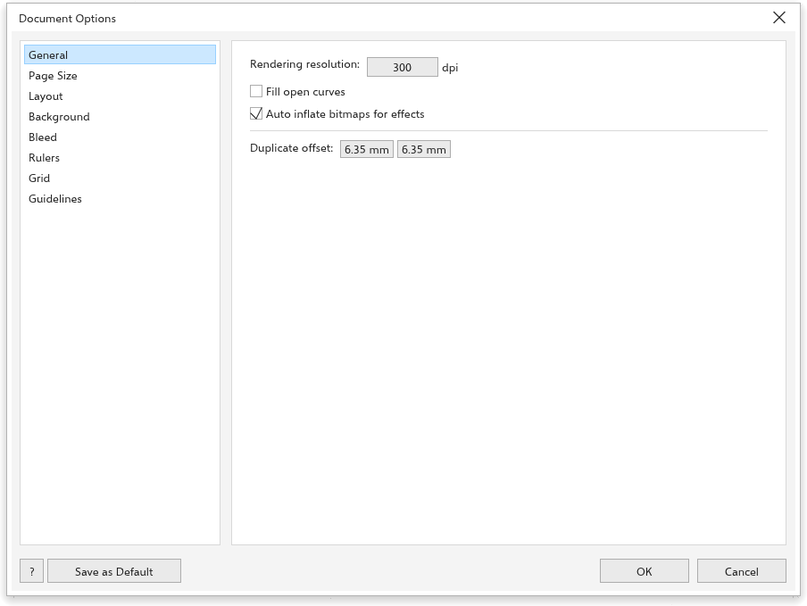
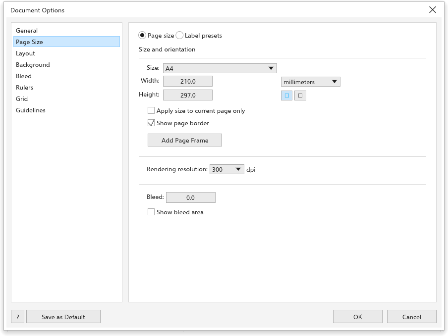
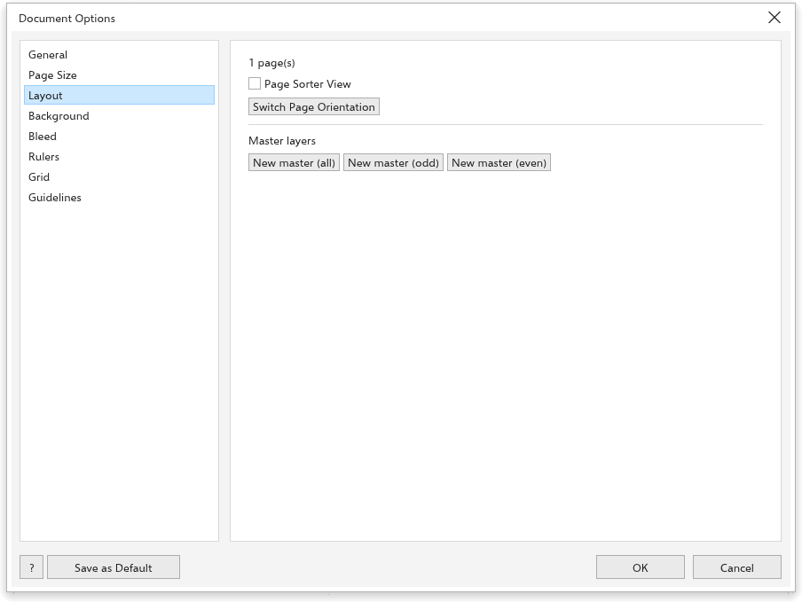
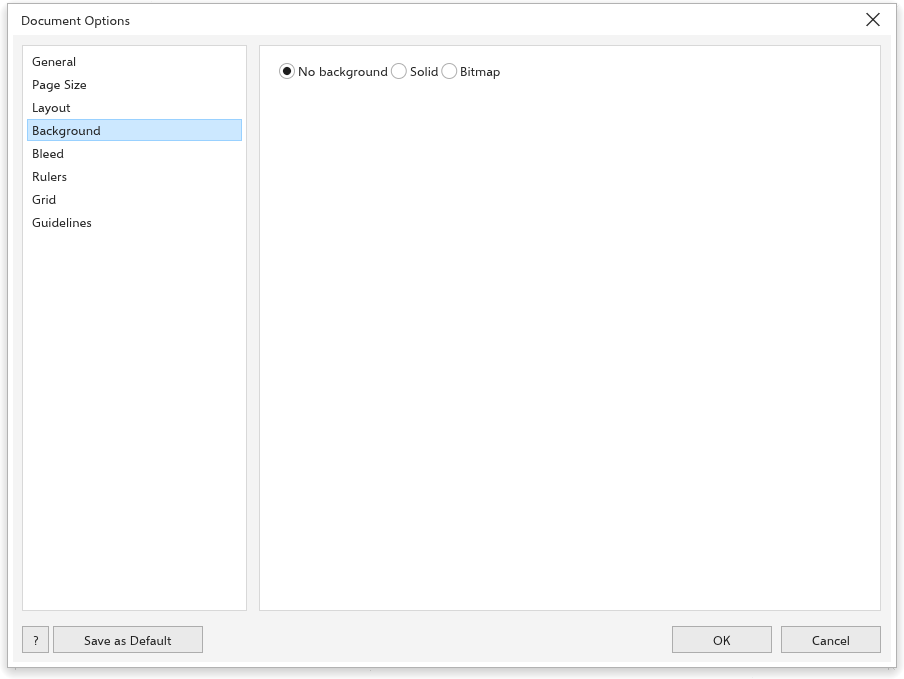
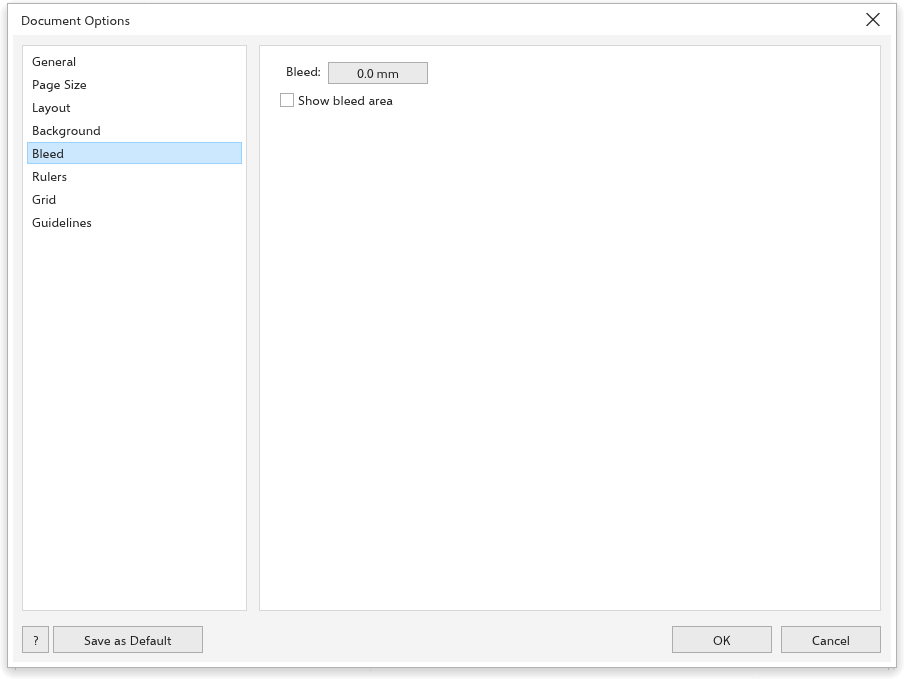
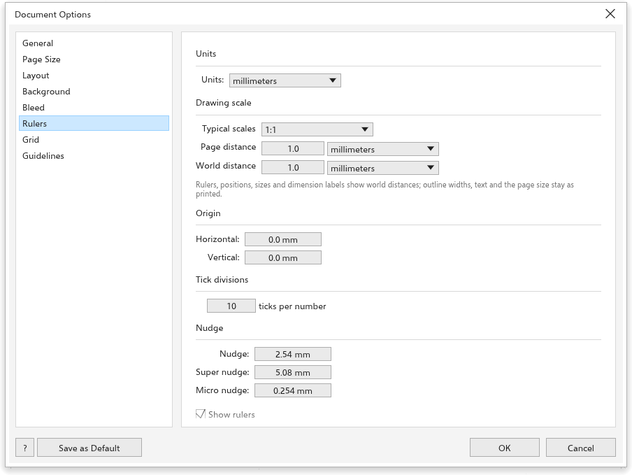
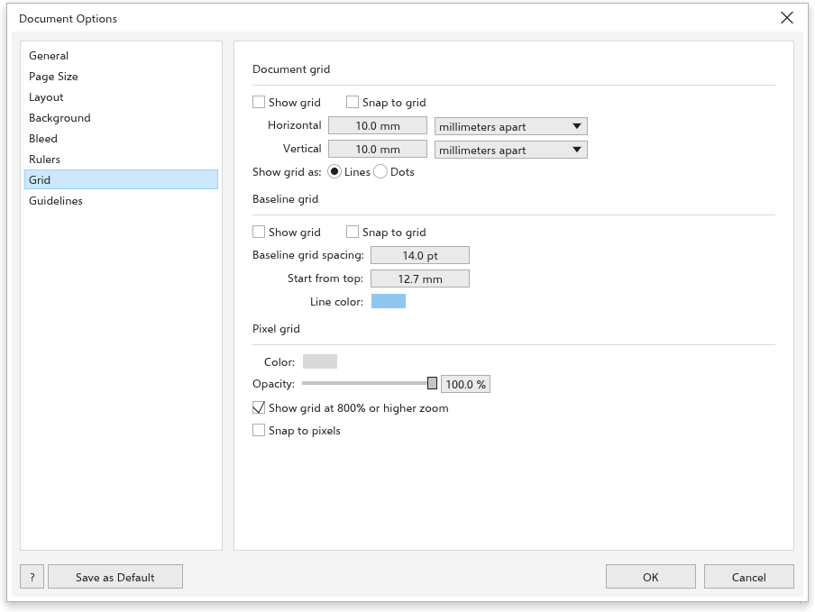
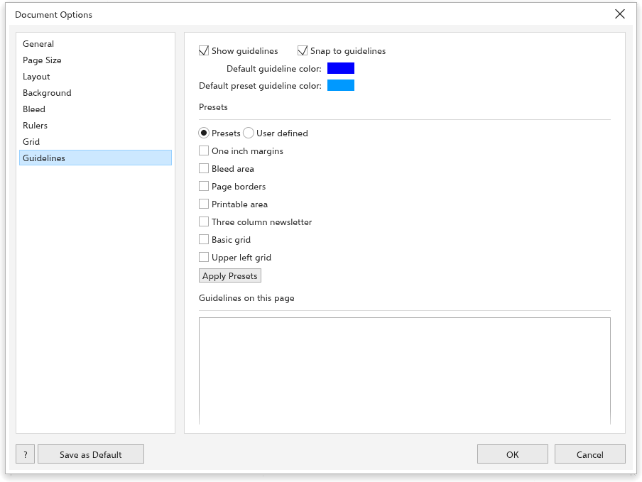

لم تُترجم هذه الصفحة بعد وتُعرض بالإنجليزية.
Document options
Layout > Document Options opens the settings of the active drawing: page size, layout, background, bleed, rulers, grid and guidelines. Double-clicking a ruler or the page border also opens it. Choose a page from the list on the left. Changes show at once; OK keeps them and Cancel puts everything back. Save as default keeps the grid, ruler and guideline settings for new drawings.
General

- Rendering resolution: the resolution of effects that are turned into pixels, such as drop shadows and bitmap effects.
- Fill open curves (off at first): when on, open curves show their fill as if they were closed.
- Auto inflate bitmaps for effects (on at first): bitmaps grow to make room for effects that spread past their edges.
- Duplicate offset: how far Duplicate places the copy.
Page size

- Choose Page size for a paper size, or Label presets for sheets of labels, which set the page to the sheet size and add guidelines around each label.
- Size, Width and Height, and Portrait or Landscape. The save button next to Size keeps a custom size under a name you type, and the delete button forgets the saved size shown. Saved sizes appear in every page size list: the property bar, the Page Size dialog box, these options and the new document dialog box.
- Apply size to current page only: change the current page only.
- Show page border, and Add Page Frame, which adds a rectangle the size of the page.
- Rendering resolution, Bleed and Show bleed area (see below).
Layout

The page shows how many pages the drawing has, with Page Sorter View and Switch Page Orientation, and lists the Master layers, each shown on All pages, Odd pages or Even pages. The buttons add a new master layer for all, odd or even pages. See Master layers.
Background

Choose No background, a Solid color, or a Bitmap (Choose bitmap) to show behind every page.
Bleed

Bleed is the part of the drawing that runs past the edge of the page, so the print has no white edge once trimmed. Set the Bleed distance and tick Show bleed area to see it. Printing and PDF export can include the bleed; see Printing.
Rulers

- Units: the drawing units (inches, millimeters, picas, points, pixels, ciceros, didots, feet, yards, miles, centimeters, meters or kilometers).
- Drawing scale: makes a distance on the page stand for a distance in the world, such as 1:100. Choose a typical scale, or type the page distance and the world distance. Rulers, positions, sizes and new dimension lines then show world distances; page sizes, outline widths and text sizes do not.
- Origin: where the rulers count from (Horizontal and Vertical); Reset origin to the page corner puts it back. You can also drag the origin out of the corner where the rulers meet.
- Tick divisions: the number of ticks between ruler numbers.
- Nudge: the Nudge distance of the arrow keys (2.54 mm), the Super nudge with Shift (5.08 mm) and the Micro nudge with Ctrl (0.254 mm).
- Show rulers.
Grid

- Document grid: Show grid, Snap to grid, the Horizontal and Vertical spacing (10 mm at first), as a distance or as lines per unit, and Show grid as Lines or Dots.
- Baseline grid: lines across the page for lining up text, with the Baseline grid spacing (14 points), the Start from top (12.7 mm) and the Line color.
- Pixel grid: the Color and Opacity of the grid of pixels, Show grid at 800% or higher zoom and Snap to pixels.
Guidelines

- Show guidelines and Snap to guidelines.
- Default guideline color and Default preset guideline color.
- Presets: one inch margins, bleed area, page borders, printable area, a three-column newsletter, a basic grid and an upper left grid.
- User defined: Margins (Top, Bottom, Left, Right), Columns (Number of columns and Distance between) and a Grid (Rows and Columns). Apply Presets adds them; a line that is already there is not added twice.
See Rulers, grids and guidelines for working with guidelines on the page.